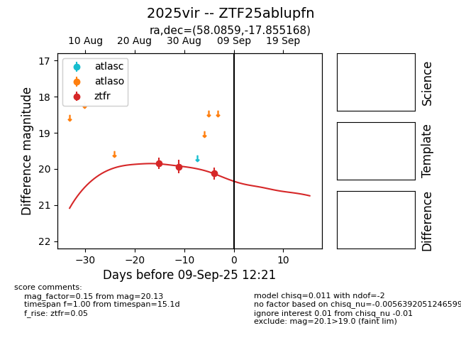

FINK: ZTF25ablupfn
Lasair: ZTF25ablupfn
ALeRCE: ZTF25ablupfn
TNS: 2025vir
YSE: 2025vir
ZTF25ablupfn (ztf,fink)
2025vir (tns,yse)
equatorial (ra, dec) = (58.0859,-17.85517)
galactic (l, b) = (210.1526,-47.42931)

last ztfr=20.13
3 ztfr detections